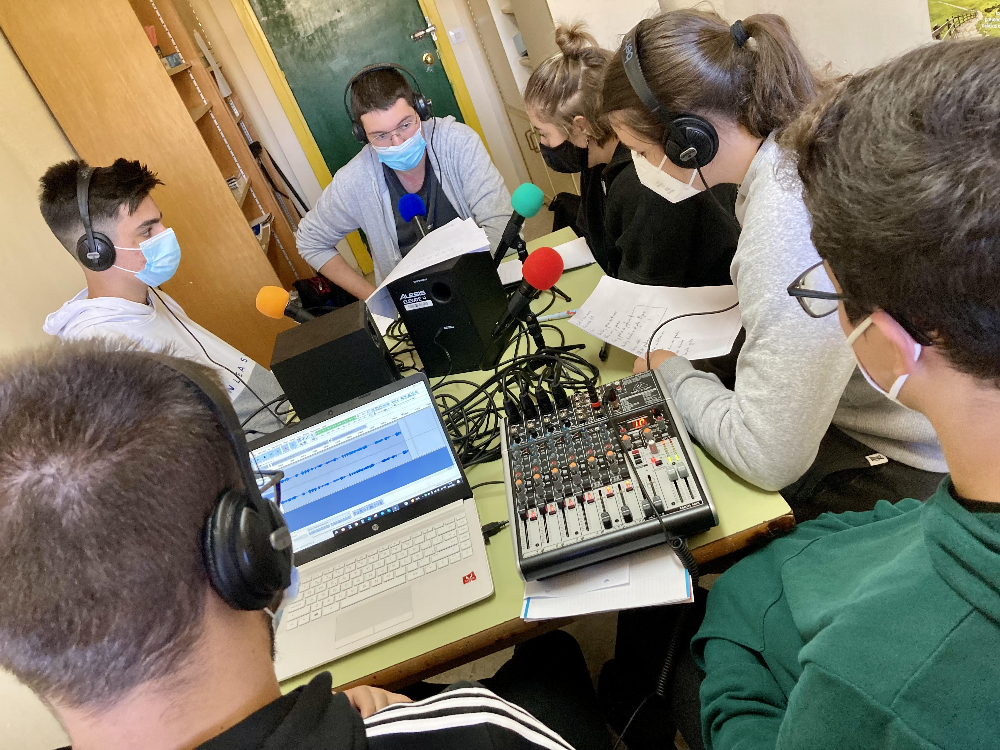

Nos vamos a PICASSO FM
Si el guion está completo, estará todo listo para realizar la grabación en la radio.
Llegados a este punto, es normal que nos hagamos algunas preguntas frecuentes:
¿Dónde y cuándo?
El estudio de PICASSO FM está situado en el pasillo de la sala de profesores, junto al aula de Apoyo de PT y frente al Departamento de Lengua.
Vuestro profesor o profesora os indicará el día y la hora a la que podéis realizar la grabación.
Es importante que seáis puntuales y, si habéis trabajado el podcast en grupo, que vayáis todos los integrantes del equipo (sí, aunque no seas locutor/a).
¡Es una experiencia única!
¿Qué llevamos?
A la cita debéis acudir con todos los archivos sonoros necesarios (sintonía, música de fondo, efectos...) descargados en un pen-drive y debidamente identificados en el título.
No hace falta imprimir el guion (el/la profe llevará copias). Y podéis leerlo también directamente desde vuestro móvil y así ahorramos papel ;)
¿Qué hacemos con los nervios?
¡Los dejamos en el pasillo! Grabaremos en lo que se conoce como "falso directo", es decir, que intentaremos hacerlo como si estuviéramos en directo pero si hay algún pequeño fallo, NO PASA NADA. Se retoma, se repite, se corrige y se edita para que nadie se entere ;)
¿Qué programa usaremos?
La grabación del podcast se realiza con el programa de software gratuito Audacity, previamente instalado en el ordenador portátil que conectaremos a la mesa de grabación.
Quien realice las funciones de técnico de grabación/sonido (sea profe o alumno/a), debe familiarizarse con el programa, pero no os preocupéis que no es demasiado complicado hacer un uso básico.
Para saberlo todo sobre él, aquí tenéis un manual y, para ver cómo se hace en la práctica, aquí hay un tutorial.
A partir de aquí, se puede hacer todo, desde lo más simple a lo más complejo. ¡El límite está en vuestra imaginación!
